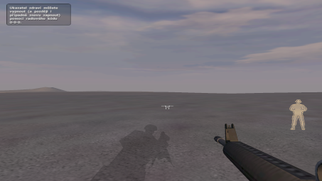
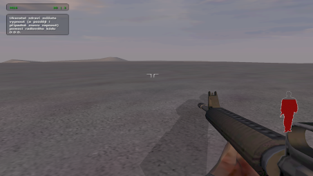

| Autor : Ježuro, Jan Čepera |
Skript nie je samostatný k dispozícii Zpět na scripty |
| Ukazateľ zdravia #1 | |
|
Spomínate si na ukazateľ zdravia z misií Ranní Rosa a Tři králové, ktoré vytvoril Ježuro?
Efektívna fičúra, ktorá dokáže pekne oživiť misiu funguje pomocou zdrojov, ktoré sú tvorené .paa obrázkami, a pomocou skriptu,
ktorý v pravidelnom intervale kontroluje stav zdravia hráča, na základe čoho sa mení zobrazený obrázok predstavujúci zdravie.
 Pozrel som sa teda do zdrojákov misie Ranní Rosa, vytiahol potrebné veci pre fungovanie ukazateľa a dal dokopy 2 verzie ukážkovej misie (druhú verziu, čo do obrázkov, má na starosti Jan Čepera - tvorca misie Fatalness). Core skript je Ježurova robota.  Dôležitá poznámka: Ak by ste chceli ukazateľ zdravia použiť v misii, je treba zabezpečiť, aby sa pred prípadnými animačkami ukazateľ odstránil. Dosiahne sa to jednoduchou zmenou podmienky Health v skripte na hodnotu FALSE (a po konci animačky nastaviť hodnotu na TRUE), t.j.: Health = FALSE ~0.05 ;==== samotná custcéna==== ; .... ;==== koniec custcény==== Health = TRUE A to je všetko :o). TonyHawk |
|
|
Stáhnout ukázkovou misi (verze 1 - Ranní Rosa)
Stáhnout ukázkovou misi (verze 2 - Čepera) |
|